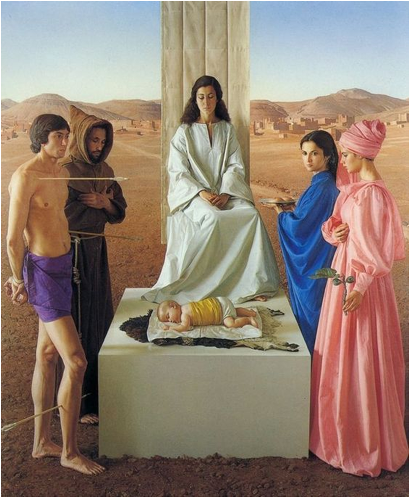

W2: Simulation & Pastiche: Postmodernism

::: {.column-margin}
Readings:
- Amalia Ulman, “Excellences & Perfections” (website; Instagram)
- Alastair Sooke, “Is This The First Instagram Masterpiece?”
- “Amalia Ulman: Meme Come True”
- Emilie Friedlander, “Social Anxiety: Why Amalia Ulman’s Fake ‘Middlebrow’ Instagram Is No Different From Yours”
To watch:
- El Planeta
- Inventing Anna, Episode 6
::: :::
Claudio Bravo, Madonna (1979)
You’ve heard of postmodernism, of course—who hasn’t? As arguably the most influential cultural movement of the past half century, it’s almost inescapable today, ubiquitous across the spectrum of the arts, from Warhol to Jeff Koons, Twin Peaks to Stranger Things, Quentin Tarantino’s Pulp Fiction to Wes Anderson’s Isle of Dogs—okay that’s enough, I could go on for the entire lecture…
But what exactly is postmodernism? When did it start? And has it ended yet? In keeping with my approach in the course thus far, rather than plunging into dense theoretical texts, we will explore postmodernist aesthetics through some representative examples—in this case the works of the U.S. artist Cindy Sherman and the more recent Argentinian artist Amalia Ulman.
Since there simply isn’t sufficient space here to explore all of the many facets of postmodernism, some basic distinctions and pointers will have to suffice. For a deeper dive, your starting point should probably be Fredric Jameson’s influential essay, “Postmodernism or the Cultural Logic of Late Capitalism”, followed by his book; or the French social theorist Jean Baudrillard’s classic book Simulacra and Simulations. But you don’t have to start with either of these texts. The first book I read on postmodernism was actually about architecture, Charles Jenks’s book The Language of Postmodernist Architecture, which has some illuminating discussion of the differences between modernist and postmodernist architecture.
An initial distinction is useful between postmodernism, which refers to an aesthetic movement extending across the spectrum of the arts, and postmodernity, a broader term that refers to a general condition (the reference points here being Jean-François Lyotard’s influential book The Postmodern Condition and David Harvey’s The Condition of Postmodernity) of society that has come to characterize the experience of global societies in the second half of the twentieth century and the first part of the twenty-first. I’m not going to get into the nature of postmodernity here, but suffice to say that postmodernism in the arts can be thought of as the artistic and cultural counterpart of the conditon of postmodernity itself.
What follows can be considered a kind of “Postmodernism 101” that assumes that you know very little about postmodernism at the outset, and suggests some lines of inquiry to follow if you’re interested in exploring it in more depth.
So what do the diverse group of artists mentioned so far—Andy Warhol, Cindy Sherman, David Lynch, Quentin Tarantino, Jeff Koons, Wes Anderson, Amalia Ulman, and many more—have in common, aesthetically speaking?
While people who have tried to define postmodernism agree that it can mean many different things, most would agree that one of its defining characteristics is pastiche, or what Fredric Jameson called “blank parody”. Pastiche here refers to the mimicry of particular historical styles, irrespective of the artistic field in question—painting, architecture, cinema, television, music, comics, and so on.
Consider, for example, the image at the top of this page, Madonna by the Chilean artist Claudio Bravo. At first glance, you might easily mistake it for a Renaissance painting, in terms of its apparently religious subject matter, the vaguely biblical background that recalls religious illustrated books, and the symmetrical composition. The figure on the left pierced with arrows, for example, recalls the Christian martyr St. Sebastian, the subject of numerous Renaissance paintings. It might come as a surprise, then, to learn that the painting is a contemporary one (1979). The image first came to my attention in the early 1990s when it was used on the cover of an album by the Ensemble Alcatraz, Visions and Miracles (1988), a vocal group specializing in medieval and early modern music based in the San Franciso Bay area. The label website describes the album thus:
The Iberian Peninsula in the 13th century was home to a great exchange of cultures. One result: the cantiga, a combination of old and new musics from Christian, Muslim, and Jewish sources that told stories of adventure, calamity, and redemption, here brought to life by the Ensemble Alcatraz.
In Claudio Bravo’s pastiche of Renaissance painting, and the Ensemble Alcatraz’s eclectic pastiches of 13th-century Iberian music, we are already deeply immersed in postmodernist aesthetics.
One could spend a lot of time exploring postmodernist aesthetics simply within painting, from the 1960s “Pop Art” of Andy Warhol and Roy Lichtenstein to more recent examples. Both of these artists exemplify another key principle of postmodernist aesthetics: the embrace of popular media such as comics and the mass-cultural imagery of advertising, collapsing the modernist hierarchy between “high” (avant-garde) art and the “low” art (kitsch) of consumer mass culture.
Rather than painting, a particularly interesting starting point for exploring postmodernist aesthetics is photography. The 1970s saw the emergence of a number of female artists whose work engaged in different ways with photography as a means of elaborating a new, postmodernist aesthetics. They included Jenny Holzer, Barbara Kruger, Sherrie Levine, or Sandy Skoglund (I leave you to Google any of these), but the two artists that I’m going to discuss today are of particular interest because of how their photographic work engages with the cinematic (Cindy Sherman) and social media (Amalia Ulman).
Cindy Sherman
Cindy Sherman is best known for her series of photographs (I think there are over 70 in all) dating from the late 1970s (1977-80) in which she elaborately stages stereotypical female roles that look uncannily like they are film stills from popular movies—the only difference being that the movies in question don’t exist. The main image for the course syllabus is a collage of some of the best-known of these photographs. Take a closer look at it, and click on the image to find out more about the series.
So what is “postmodernist” about this project? First, and related to the earlier discussion, because as the title of the series itself (Untitled Film Stills) makes clear, the photographs pastiche (that is, mimic or imitate) the visual style of the film still as a media format often seen in newspapers, magazines, and promotional matierals (such as film posters). In addition to the photographs’ formal mimicry of the film still, moreover, they also pastiche the visual style of popular films genres often problematized for their stereotypical portrayals of women, notably the well-known femme fatale stereotype of 1940s-1950s film noir. Some of Cindy Sherman’s photographs can be seen as pastiching the visual codes of film noir, most obviously in her decision to shoot on black-and-white film stock, reproducing the monochromatic look that is one of the most striking visual characteristics of film noir. It should be remembered that while the default film stock for photographers (especially photojournalists) well into the 1960s was black and white, even though shooting in color had been technically possible long before then, by the 1970s color had so become the norm that to choose to shoot in black and white already lent a retro that has become one of the hallmarks of postmodernist aesthetics. Sherman’s decision to shoot in black and white, then, is another (easily overlooked) element of their stylistic pastiche of the monochromatic aesthetic both of film noir and historical photography.
What’s so fascinating about Sherman’s film stills, though, is that even though some of them can be seen as stylistic pastiches of film noir, in many other photographs it’s far less clear which cinematic genre is the object of pastiche. While there’s often a strong visual sense of déjà vu, evoking a popular film of the 1950s or 1960s, they key point is the indeterminacy of the reference—the fact that we can’t identify the photograph with any specific historical film or film genre.
This brings us to another defining concept of postmodernist aesthetics: simulation. The concept was elaborated in several classic essays in the 1970s by the French social theorist Jean Baudrillard, notably in his book (mentioned earler) Simulacra and Simulations (1979). For Baudrillard, the postmodern world is dominated by what he calls simulacra (sing. “simulacrum”), a new form of representation that essentially reverses the hierarchical relationship between the model and the copy. Historically, in the history of art, the model—in the form of the original work of art—has always preceded the copy: there is only one Mona Lisa, even though there are thousands of copies of Leonardo Da Vinci’s painting. The age of what Baudrillard calls the simulacrum—the postmodernist age—is defined by the reversal of this hierarchy, by the ascendancy of copies without models (which is what Baudrillard means by simulacra). Whereas in the era of realism, what was still understood as the “real world” preceded representation of it (regardless of the medium—literature, painting, photography, cinema, TV), by the 1970s, Baudrillard argued, the relationship between the real and representation had reversed, or perhaps more accurately the distinction between the two had collapsed: henceforth, claimed Baudrillard, “reality” had become effectively indistinguishable from mass-media representations of it, or what he and the Italian semiotic theorist Umberto Eco called hyperreality.
This is why the Mona Lisa has what Walter Benjamin calls aura, its historical uniqueness in space and time
We don’t need to go any further at this point to understand how the photography of Cindy Sherman, as well as many other artists like her in the 1970s, could be seen as an artistic commentary on the hyperrealist world that Baudrillard was describing. Sherman’s Film Stills photographs are also copies without models in the sense that what semiotic theorists would call their referent—the original film from which they are sourced—does not exist. They are what Baudrillard might call cinematic simulacra.
Over the past few decades, Cindy Sherman has become increasingly revered as one of the most influential figures in the emergence of postmodernist aesthetics since the 1970s. Her photographic critique of stereotypical representations of women in popular cinema was part of the larger current of feminist critiques of patriarchal representation, from Laura Mulvey’s influential critique of the male gaze in her mid-1970s essay to Chantal Akerman’s groundbreaking film Jeanne Dielman, 23 quai du Commerce, 1080 Bruxelles (1975). Sherman has continued her exploration of female representation right up to the present, and even has an Instagram account. An episode of the recent Netflix series Inventing Anna includes an episode in which characters discuss her work at a gallery retrospective, and includes a brief cameo by Sherman herself, wearing the same head-scarfed outfit that she wears in one of her original Film Stills photographs, essentially re-enacting her own earlier roleplay in the photograph. (Could it be any more postmodernist?!?). The inclusion of Sherman in the show could scarcely be more appropriate, given that its subject is Anna Sorokin, who conned luxury hotels and her wealthy New York socialite friends by masquerading as a German heiress called Anna Delvey–another stunningly postmodernist example of “representation” usurping the place of reality.
Amalia Ulman
Cindy Sherman’s Instagram account (in fact, she has several) provides a link between her 1970s performance-art photography exploring female identity and the work of the social media artist Amalia Ulman, which can arguably be seen as continuing Sherman’s project in the twenty-first century domain of social media. If you read any of the articles about Ulman’s work linked to as this week’s reading assignments, you should by now have a good idea of how she fits into the larger framework of postmodernism that I have been sketching out in the preceding discussion. As with Sherman’s Film Stills, and as with a number of similar postmodernist feminist artists (the French artist Sophie Calle is another example), in her fake Instagram account Ulman fabricated a stereotypical female persona as an art project, exposing through the sexist comments of her male admirers the continuing pressure on young women to conform to the visual pleasure of the male gaze almost half a century since Laura Mulvey’s critique, and in spite of “postfeminist” celebrations of the power of female sexuality Ulman’s work can in fact be seen as developing such as critique through masquerade, photography, and social media platforms in a manner that continues the artistic critiques of so many other postmodernist feminist artists since the 1970s.
Just as Cindy Sherman’s Film Stills project explored stereotypical representations of women in cinema, Amalia Ulman has recently gone a step further by directing her first feature film, El Planeta, that continues her exploration of representations of female identity in the social media age more directly in cinematic form. The film’s opening sequence again sees Ulman role-playing, this time posing as a call girl negotiating sexual and financial arrangements with a future client in what subsequently proves to be (like her Instagram persona) a pure fabrication that ruthlessly exposes the objectification of women in patriarchal society. The masquerades continue after this initial one, from her later (apparent) impersonation of an international designer to her later romantic roleplay in her date with the Asian guy that she meets in the gift shop. Both she herself and her mother (played, in fact, by Ulman’s own mother), it turns out, are engaged in role-playing a fantasy of a glamorous lifestyle that has no relation to their actual socio-economic status—a masquerade that is ultimately exposed in the mother’s arrest for shoplifting with which the film ends.
It’s worth noting, finally, that as with Cindy Sherman’s film stills, Ulman’s 2022 film is also in black and white, stylistically pastiching not film noir in this case but the French New Wave films of Jean-Luc Godard, Agnès Varda, or François Truffaut, many of which also engage with the problematic position of women in the French society of their time. It’s interesting in this regard to think about the relationship between El Planeta and Varda’s film Cléo from 5 to 7, or Godard’s film with Anna Karina, Vivre Sa Vie which explores themes similar to those in Ulman’s film. I leave you to think about those connections, but suffice to say that Ulman’s black-and-white pastiche of a New Wave film also attests to the legacy of postmodernist aesthetics half a century after Cindy Sherman’s iconic film stills.